Get Started
Author: Matthew Hung
Last Updated: 2025/04/04
Source:vignettes/deseq2pip.Rmd
deseq2pip.Rmd##
## Attaching package: 'dplyr'## The following objects are masked from 'package:stats':
##
## filter, lag## The following objects are masked from 'package:base':
##
## intersect, setdiff, setequal, union##
## Attaching package: 'magrittr'## The following object is masked from 'package:rlang':
##
## set_names## The following object is masked from 'package:tidyr':
##
## extract## strpip 0.1.0##
## Attaching package: 'cowplot'## The following object is masked from 'package:patchwork':
##
## align_plots## Loading required package: viridisLite## Loading required package: S4Vectors## Loading required package: stats4## Loading required package: BiocGenerics##
## Attaching package: 'BiocGenerics'## The following objects are masked from 'package:dplyr':
##
## combine, intersect, setdiff, union## The following objects are masked from 'package:stats':
##
## IQR, mad, sd, var, xtabs## The following objects are masked from 'package:base':
##
## anyDuplicated, aperm, append, as.data.frame, basename, cbind,
## colnames, dirname, do.call, duplicated, eval, evalq, Filter, Find,
## get, grep, grepl, intersect, is.unsorted, lapply, Map, mapply,
## match, mget, order, paste, pmax, pmax.int, pmin, pmin.int,
## Position, rank, rbind, Reduce, rownames, sapply, saveRDS, setdiff,
## table, tapply, union, unique, unsplit, which.max, which.min##
## Attaching package: 'S4Vectors'## The following object is masked from 'package:tidyr':
##
## expand## The following objects are masked from 'package:dplyr':
##
## first, rename## The following object is masked from 'package:utils':
##
## findMatches## The following objects are masked from 'package:base':
##
## expand.grid, I, unname## Loading required package: IRanges##
## Attaching package: 'IRanges'## The following objects are masked from 'package:dplyr':
##
## collapse, desc, slice## Loading required package: GenomicRanges## Loading required package: GenomeInfoDb##
## Attaching package: 'GenomicRanges'## The following object is masked from 'package:magrittr':
##
## subtract## Loading required package: SummarizedExperiment## Loading required package: MatrixGenerics## Loading required package: matrixStats##
## Attaching package: 'matrixStats'## The following object is masked from 'package:dplyr':
##
## count##
## Attaching package: 'MatrixGenerics'## The following objects are masked from 'package:matrixStats':
##
## colAlls, colAnyNAs, colAnys, colAvgsPerRowSet, colCollapse,
## colCounts, colCummaxs, colCummins, colCumprods, colCumsums,
## colDiffs, colIQRDiffs, colIQRs, colLogSumExps, colMadDiffs,
## colMads, colMaxs, colMeans2, colMedians, colMins, colOrderStats,
## colProds, colQuantiles, colRanges, colRanks, colSdDiffs, colSds,
## colSums2, colTabulates, colVarDiffs, colVars, colWeightedMads,
## colWeightedMeans, colWeightedMedians, colWeightedSds,
## colWeightedVars, rowAlls, rowAnyNAs, rowAnys, rowAvgsPerColSet,
## rowCollapse, rowCounts, rowCummaxs, rowCummins, rowCumprods,
## rowCumsums, rowDiffs, rowIQRDiffs, rowIQRs, rowLogSumExps,
## rowMadDiffs, rowMads, rowMaxs, rowMeans2, rowMedians, rowMins,
## rowOrderStats, rowProds, rowQuantiles, rowRanges, rowRanks,
## rowSdDiffs, rowSds, rowSums2, rowTabulates, rowVarDiffs, rowVars,
## rowWeightedMads, rowWeightedMeans, rowWeightedMedians,
## rowWeightedSds, rowWeightedVars## Loading required package: Biobase## Welcome to Bioconductor
##
## Vignettes contain introductory material; view with
## 'browseVignettes()'. To cite Bioconductor, see
## 'citation("Biobase")', and for packages 'citation("pkgname")'.##
## Attaching package: 'Biobase'## The following object is masked from 'package:MatrixGenerics':
##
## rowMedians## The following objects are masked from 'package:matrixStats':
##
## anyMissing, rowMedians## The following object is masked from 'package:rlang':
##
## exprs## Warning: replacing previous import 'S4Arrays::makeNindexFromArrayViewport' by
## 'DelayedArray::makeNindexFromArrayViewport' when loading 'SummarizedExperiment'## Registered S3 methods overwritten by 'ggalt':
## method from
## grid.draw.absoluteGrob ggplot2
## grobHeight.absoluteGrob ggplot2
## grobWidth.absoluteGrob ggplot2
## grobX.absoluteGrob ggplot2
## grobY.absoluteGrob ggplot2##
## Attaching package: 'ggalt'## The following object is masked from 'package:rlang':
##
## bytes## ## clusterProfiler v4.14.6 Learn more at https://yulab-smu.top/contribution-knowledge-mining/
##
## Please cite:
##
## T Wu, E Hu, S Xu, M Chen, P Guo, Z Dai, T Feng, L Zhou, W Tang, L Zhan,
## X Fu, S Liu, X Bo, and G Yu. clusterProfiler 4.0: A universal
## enrichment tool for interpreting omics data. The Innovation. 2021,
## 2(3):100141##
## Attaching package: 'clusterProfiler'## The following object is masked from 'package:IRanges':
##
## slice## The following object is masked from 'package:S4Vectors':
##
## rename## The following object is masked from 'package:biomaRt':
##
## select## The following object is masked from 'package:stats':
##
## filter## For full functionality, please install the 'msigdbdf' package with:
## install.packages('msigdbdf', repos = 'https://igordot.r-universe.dev')##
## Attaching package: 'ggpubr'## The following object is masked from 'package:plotr':
##
## get_palette## The following object is masked from 'package:cowplot':
##
## get_legend##
## Attaching package: 'scales'## The following object is masked from 'package:viridis':
##
## viridis_pal##
## Attaching package: 'limma'## The following object is masked from 'package:DESeq2':
##
## plotMA## The following object is masked from 'package:BiocGenerics':
##
## plotMA## Loading required package: mgcv## Loading required package: nlme##
## Attaching package: 'nlme'## The following object is masked from 'package:IRanges':
##
## collapse## The following object is masked from 'package:dplyr':
##
## collapse## This is mgcv 1.9-1. For overview type 'help("mgcv-package")'.## Loading required package: genefilter##
## Attaching package: 'genefilter'## The following objects are masked from 'package:MatrixGenerics':
##
## rowSds, rowVars## The following objects are masked from 'package:matrixStats':
##
## rowSds, rowVars## The following object is masked from 'package:patchwork':
##
## area## Loading required package: BiocParallel## enrichplot v1.26.6 Learn more at https://yulab-smu.top/contribution-knowledge-mining/
##
## Please cite:
##
## Guangchuang Yu. Gene Ontology Semantic Similarity Analysis Using
## GOSemSim. In: Kidder B. (eds) Stem Cell Transcriptional Networks.
## Methods in Molecular Biology. 2020, 2117:207-215. Humana, New York, NY.##
## Attaching package: 'enrichplot'## The following object is masked from 'package:ggpubr':
##
## color_palette##
## Attaching package: 'deseq2pip'## The following object is masked from 'package:cowplot':
##
## save_plotRun deseq2pip on RNA-seq data
# create a directory for results, currently set to tempdir()
# save_dir <- "/Users/hungm/Documents/development/deseq2pip/tests/rnaseq/pipeline/"
save_dir <- tempdir()
dir.create(save_dir, recursive = TRUE)## Warning in dir.create(save_dir, recursive = TRUE): '/tmp/RtmpTUxHJn' already
## existsLoad DESeq2 object from nfcore pipeline
# load example DESeq2 object
rdata <- system.file("data", "GSE189410.dds.RData", package = "deseq2pip")
tx2gene <- gzfile(system.file("data", "GSE189410.tx2gene.tsv.gz", package = "deseq2pip"))
dds <- import_nfcore_rna(rdata = rdata, tx2gene = tx2gene)
assay(dds)[1:5, 1:5]## BM_IgA_1 BM_IgA_2 BM_IgA_3 BM_IgA_4 BM_IgG_1
## 0610005C13Rik 18 8 18 11 12
## 0610006L08Rik 0 0 11 0 0
## 0610009B22Rik 102 93 124 128 126
## 0610009E02Rik 50 11 22 13 21
## 0610009L18Rik 5 10 3 4 3Run deseq2 pipeline
# run deseq2pip
run_deseq2_pip(
dds,
assaytype = "RNA",
batch = NULL,
experiment = "GSE189410",
remove_xy = TRUE,
remove_mt = TRUE,
org = "mouse",
group_by = "Group2",
save_dir = save_dir)## Running quality control pipeline...## Removing XY genes...## Removing MT genes...## Filtering genes with low expressions...

## Saving DESeq2 object & expressions...## Running distance analysis pipeline...## Running batch correction...## Running PCA and distance analysis...## using ntop=500 top features by variance## using ntop=500 top features by variance
## using ntop=500 top features by variance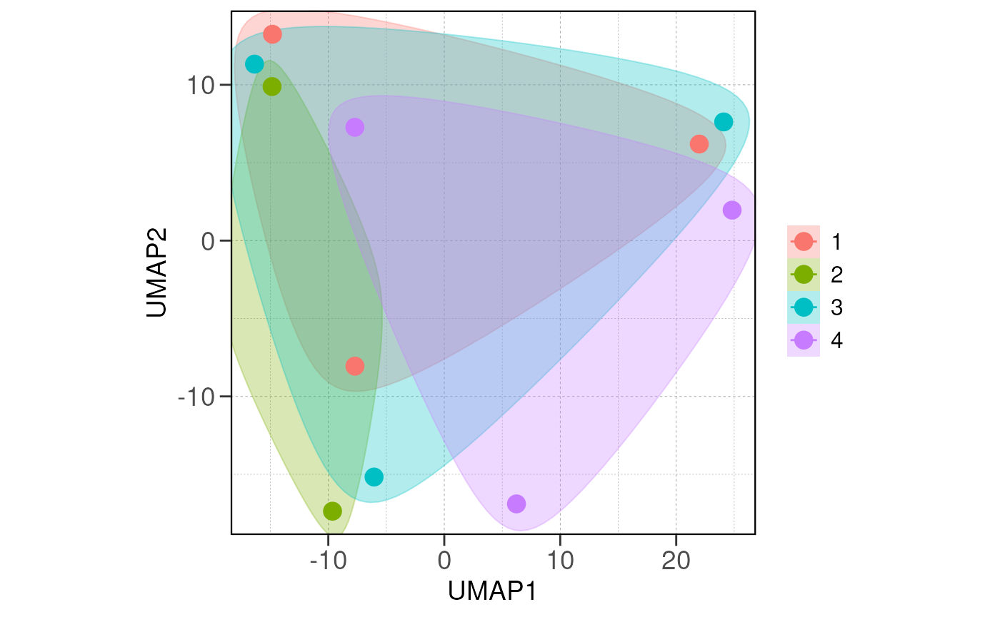
## using ntop=500 top features by variance
## Running differential expression analysis...## Running DESeq2 differential expression...## | | | 0%## using pre-existing size factors## estimating dispersions## gene-wise dispersion estimates## mean-dispersion relationship## final dispersion estimates## fitting model and testing## using 'ashr' for LFC shrinkage. If used in published research, please cite:
## Stephens, M. (2016) False discovery rates: a new deal. Biostatistics, 18:2.
## https://doi.org/10.1093/biostatistics/kxw041## Warning: The OmnipathR package is needed for annotation functions. Please
## install it with: BiocManager::install('OmnipathR')## | |======================= | 33%## using pre-existing size factors## estimating dispersions## gene-wise dispersion estimates## mean-dispersion relationship## final dispersion estimates## fitting model and testing## using 'ashr' for LFC shrinkage. If used in published research, please cite:
## Stephens, M. (2016) False discovery rates: a new deal. Biostatistics, 18:2.
## https://doi.org/10.1093/biostatistics/kxw041## Warning: The OmnipathR package is needed for annotation functions. Please
## install it with: BiocManager::install('OmnipathR')## | |=============================================== | 67%## using pre-existing size factors## estimating dispersions## gene-wise dispersion estimates## mean-dispersion relationship## final dispersion estimates## fitting model and testing## using 'ashr' for LFC shrinkage. If used in published research, please cite:
## Stephens, M. (2016) False discovery rates: a new deal. Biostatistics, 18:2.
## https://doi.org/10.1093/biostatistics/kxw041## Warning: The OmnipathR package is needed for annotation functions. Please
## install it with: BiocManager::install('OmnipathR')## | |======================================================================| 100%## Generating MA plots...## | | | 0%## Warning: ggrepel: 1096 unlabeled data points (too many overlaps). Consider
## increasing max.overlaps## | |======================= | 33%## Warning: ggrepel: 1694 unlabeled data points (too many overlaps). Consider
## increasing max.overlaps## | |=============================================== | 67%## Warning: ggrepel: 768 unlabeled data points (too many overlaps). Consider
## increasing max.overlaps## | |======================================================================| 100%## Generating volcano plots...## | | | 0%## Warning: Removed 36490 rows containing missing values or values outside the scale range
## (`geom_point()`).## Warning: Removed 53097 rows containing missing values or values outside the scale range
## (`geom_text()`).## Warning: ggrepel: 37 unlabeled data points (too many overlaps). Consider
## increasing max.overlaps## Warning: Removed 36490 rows containing missing values or values outside the scale range
## (`geom_point()`).## Warning: Removed 53097 rows containing missing values or values outside the scale range
## (`geom_text()`).## Warning: ggrepel: 35 unlabeled data points (too many overlaps). Consider
## increasing max.overlaps## | |======================= | 33%## Warning: Removed 35583 rows containing missing values or values outside the scale range
## (`geom_point()`).## Warning: Removed 52390 rows containing missing values or values outside the scale range
## (`geom_text()`).## Warning: ggrepel: 30 unlabeled data points (too many overlaps). Consider
## increasing max.overlaps## Warning: Removed 35583 rows containing missing values or values outside the scale range
## (`geom_point()`).## Warning: Removed 52390 rows containing missing values or values outside the scale range
## (`geom_text()`).## Warning: ggrepel: 23 unlabeled data points (too many overlaps). Consider
## increasing max.overlaps## | |=============================================== | 67%## Warning: Removed 38113 rows containing missing values or values outside the scale range
## (`geom_point()`).## Warning: Removed 53040 rows containing missing values or values outside the scale range
## (`geom_text()`).## Warning: ggrepel: 39 unlabeled data points (too many overlaps). Consider
## increasing max.overlaps## Warning: Removed 38113 rows containing missing values or values outside the scale range
## (`geom_point()`).## Warning: Removed 53040 rows containing missing values or values outside the scale range
## (`geom_text()`).## Warning: ggrepel: 36 unlabeled data points (too many overlaps). Consider
## increasing max.overlaps## | |======================================================================| 100%## Running GSEA pipeline...## Running gene set enrichment analysis...## | | | 0%## using 'fgsea' for GSEA analysis, please cite Korotkevich et al (2019).## preparing geneSet collections...## GSEA analysis...## Warning in preparePathwaysAndStats(pathways, stats, minSize, maxSize, gseaParam, : There are ties in the preranked stats (34.18% of the list).
## The order of those tied genes will be arbitrary, which may produce unexpected results.## leading edge analysis...## done...## using 'fgsea' for GSEA analysis, please cite Korotkevich et al (2019).## preparing geneSet collections...## GSEA analysis...## Warning in preparePathwaysAndStats(pathways, stats, minSize, maxSize, gseaParam, : There are ties in the preranked stats (34.18% of the list).
## The order of those tied genes will be arbitrary, which may produce unexpected results.## leading edge analysis...## done...## using 'fgsea' for GSEA analysis, please cite Korotkevich et al (2019).## preparing geneSet collections...## GSEA analysis...## Warning in preparePathwaysAndStats(pathways, stats, minSize, maxSize, gseaParam, : There are ties in the preranked stats (34.18% of the list).
## The order of those tied genes will be arbitrary, which may produce unexpected results.## leading edge analysis...## done...## using 'fgsea' for GSEA analysis, please cite Korotkevich et al (2019).## preparing geneSet collections...## GSEA analysis...## Warning in preparePathwaysAndStats(pathways, stats, minSize, maxSize, gseaParam, : There are ties in the preranked stats (34.18% of the list).
## The order of those tied genes will be arbitrary, which may produce unexpected results.## leading edge analysis...## done...## using 'fgsea' for GSEA analysis, please cite Korotkevich et al (2019).## preparing geneSet collections...## GSEA analysis...## Warning in preparePathwaysAndStats(pathways, stats, minSize, maxSize, gseaParam, : There are ties in the preranked stats (34.18% of the list).
## The order of those tied genes will be arbitrary, which may produce unexpected results.## leading edge analysis...## done...## using 'fgsea' for GSEA analysis, please cite Korotkevich et al (2019).## preparing geneSet collections...## GSEA analysis...## Warning in preparePathwaysAndStats(pathways, stats, minSize, maxSize, gseaParam, : There are ties in the preranked stats (34.18% of the list).
## The order of those tied genes will be arbitrary, which may produce unexpected results.## leading edge analysis...## done...## | |======================= | 33%## using 'fgsea' for GSEA analysis, please cite Korotkevich et al (2019).## preparing geneSet collections...## GSEA analysis...## Warning in preparePathwaysAndStats(pathways, stats, minSize, maxSize, gseaParam, : There are ties in the preranked stats (36.33% of the list).
## The order of those tied genes will be arbitrary, which may produce unexpected results.## leading edge analysis...## done...## using 'fgsea' for GSEA analysis, please cite Korotkevich et al (2019).## preparing geneSet collections...## GSEA analysis...## Warning in preparePathwaysAndStats(pathways, stats, minSize, maxSize, gseaParam, : There are ties in the preranked stats (36.33% of the list).
## The order of those tied genes will be arbitrary, which may produce unexpected results.## leading edge analysis...## done...## using 'fgsea' for GSEA analysis, please cite Korotkevich et al (2019).## preparing geneSet collections...## GSEA analysis...## Warning in preparePathwaysAndStats(pathways, stats, minSize, maxSize, gseaParam, : There are ties in the preranked stats (36.33% of the list).
## The order of those tied genes will be arbitrary, which may produce unexpected results.## leading edge analysis...## done...## using 'fgsea' for GSEA analysis, please cite Korotkevich et al (2019).## preparing geneSet collections...## GSEA analysis...## Warning in preparePathwaysAndStats(pathways, stats, minSize, maxSize, gseaParam, : There are ties in the preranked stats (36.33% of the list).
## The order of those tied genes will be arbitrary, which may produce unexpected results.## leading edge analysis...## done...## using 'fgsea' for GSEA analysis, please cite Korotkevich et al (2019).## preparing geneSet collections...## GSEA analysis...## Warning in preparePathwaysAndStats(pathways, stats, minSize, maxSize, gseaParam, : There are ties in the preranked stats (36.33% of the list).
## The order of those tied genes will be arbitrary, which may produce unexpected results.## leading edge analysis...## done...## using 'fgsea' for GSEA analysis, please cite Korotkevich et al (2019).## preparing geneSet collections...## GSEA analysis...## Warning in preparePathwaysAndStats(pathways, stats, minSize, maxSize, gseaParam, : There are ties in the preranked stats (36.33% of the list).
## The order of those tied genes will be arbitrary, which may produce unexpected results.## leading edge analysis...## done...## | |=============================================== | 67%## using 'fgsea' for GSEA analysis, please cite Korotkevich et al (2019).## preparing geneSet collections...## GSEA analysis...## Warning in preparePathwaysAndStats(pathways, stats, minSize, maxSize, gseaParam, : There are ties in the preranked stats (36.6% of the list).
## The order of those tied genes will be arbitrary, which may produce unexpected results.## leading edge analysis...## done...## using 'fgsea' for GSEA analysis, please cite Korotkevich et al (2019).## preparing geneSet collections...## GSEA analysis...## Warning in preparePathwaysAndStats(pathways, stats, minSize, maxSize, gseaParam, : There are ties in the preranked stats (36.6% of the list).
## The order of those tied genes will be arbitrary, which may produce unexpected results.## leading edge analysis...## done...## using 'fgsea' for GSEA analysis, please cite Korotkevich et al (2019).## preparing geneSet collections...## GSEA analysis...## Warning in preparePathwaysAndStats(pathways, stats, minSize, maxSize, gseaParam, : There are ties in the preranked stats (36.6% of the list).
## The order of those tied genes will be arbitrary, which may produce unexpected results.## leading edge analysis...## done...## using 'fgsea' for GSEA analysis, please cite Korotkevich et al (2019).## preparing geneSet collections...## GSEA analysis...## Warning in preparePathwaysAndStats(pathways, stats, minSize, maxSize, gseaParam, : There are ties in the preranked stats (36.6% of the list).
## The order of those tied genes will be arbitrary, which may produce unexpected results.## leading edge analysis...## done...## using 'fgsea' for GSEA analysis, please cite Korotkevich et al (2019).## preparing geneSet collections...## GSEA analysis...## Warning in preparePathwaysAndStats(pathways, stats, minSize, maxSize, gseaParam, : There are ties in the preranked stats (36.6% of the list).
## The order of those tied genes will be arbitrary, which may produce unexpected results.## leading edge analysis...## done...## using 'fgsea' for GSEA analysis, please cite Korotkevich et al (2019).## preparing geneSet collections...## GSEA analysis...## Warning in preparePathwaysAndStats(pathways, stats, minSize, maxSize, gseaParam, : There are ties in the preranked stats (36.6% of the list).
## The order of those tied genes will be arbitrary, which may produce unexpected results.## leading edge analysis...## done...## | |======================================================================| 100%## Generating GSEA barplots...## | | | 0%## Warning in geom_col(aes(stroke = label), width = 0.75, col = "black"):
## Ignoring unknown aesthetics: stroke## Warning: Removed 3 rows containing missing values or values outside the scale range
## (`geom_text()`).
## Removed 3 rows containing missing values or values outside the scale range
## (`geom_text()`).## | |==== | 6%## Warning in geom_col(aes(stroke = label), width = 0.75, col = "black"):
## Ignoring unknown aesthetics: stroke## Warning: Removed 1 row containing missing values or values outside the scale range
## (`geom_text()`).
## Removed 1 row containing missing values or values outside the scale range
## (`geom_text()`).## | |======== | 11%## Warning in geom_col(aes(stroke = label), width = 0.75, col = "black"): Ignoring unknown aesthetics: stroke
## Removed 1 row containing missing values or values outside the scale range
## (`geom_text()`).
## Removed 1 row containing missing values or values outside the scale range
## (`geom_text()`).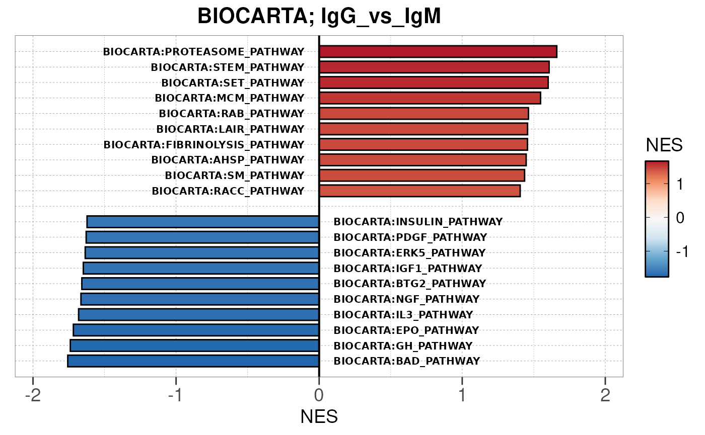
## | |============ | 17%## Warning in geom_col(aes(stroke = label), width = 0.75, col = "black"):
## Ignoring unknown aesthetics: stroke## | |================ | 22%## Warning in geom_col(aes(stroke = label), width = 0.75, col = "black"): Ignoring unknown aesthetics: stroke
## Removed 1 row containing missing values or values outside the scale range
## (`geom_text()`).
## Removed 1 row containing missing values or values outside the scale range
## (`geom_text()`).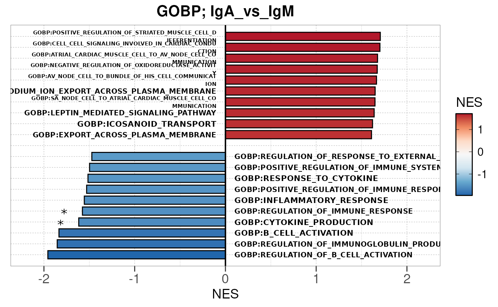
## | |=================== | 28%## Warning in geom_col(aes(stroke = label), width = 0.75, col = "black"):
## Ignoring unknown aesthetics: stroke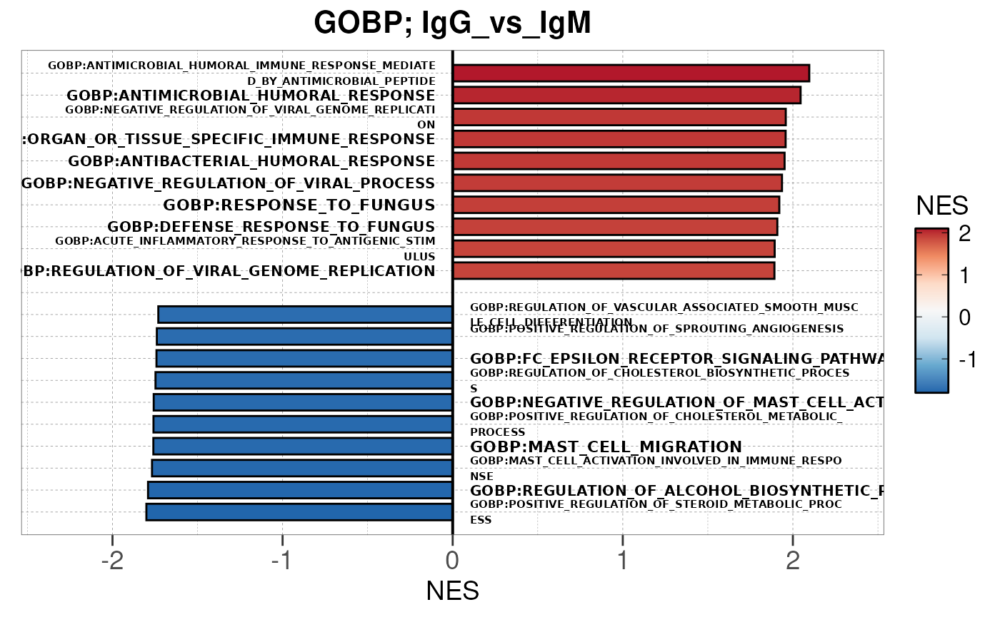
## | |======================= | 33%## Warning in geom_col(aes(stroke = label), width = 0.75, col = "black"):
## Ignoring unknown aesthetics: stroke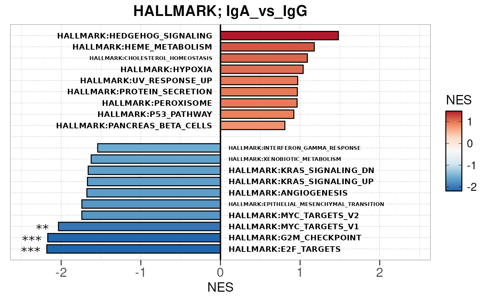
## | |=========================== | 39%## Warning in geom_col(aes(stroke = label), width = 0.75, col = "black"): Ignoring unknown aesthetics: stroke
## Removed 1 row containing missing values or values outside the scale range
## (`geom_text()`).
## Removed 1 row containing missing values or values outside the scale range
## (`geom_text()`).
## | |=============================== | 44%## Warning in geom_col(aes(stroke = label), width = 0.75, col = "black"): Ignoring unknown aesthetics: stroke
## Removed 1 row containing missing values or values outside the scale range
## (`geom_text()`).
## Removed 1 row containing missing values or values outside the scale range
## (`geom_text()`).## | |=================================== | 50%## Warning in geom_col(aes(stroke = label), width = 0.75, col = "black"): Ignoring unknown aesthetics: stroke
## Removed 1 row containing missing values or values outside the scale range
## (`geom_text()`).
## Removed 1 row containing missing values or values outside the scale range
## (`geom_text()`).## | |======================================= | 56%## Warning in geom_col(aes(stroke = label), width = 0.75, col = "black"): Ignoring unknown aesthetics: stroke
## Removed 1 row containing missing values or values outside the scale range
## (`geom_text()`).
## Removed 1 row containing missing values or values outside the scale range
## (`geom_text()`).## | |=========================================== | 61%## Warning in geom_col(aes(stroke = label), width = 0.75, col = "black"): Ignoring unknown aesthetics: stroke
## Removed 1 row containing missing values or values outside the scale range
## (`geom_text()`).
## Removed 1 row containing missing values or values outside the scale range
## (`geom_text()`).## | |=============================================== | 67%## Warning in geom_col(aes(stroke = label), width = 0.75, col = "black"):
## Ignoring unknown aesthetics: stroke## | |=================================================== | 72%## Warning in geom_col(aes(stroke = label), width = 0.75, col = "black"): Ignoring unknown aesthetics: stroke
## Removed 1 row containing missing values or values outside the scale range
## (`geom_text()`).
## Removed 1 row containing missing values or values outside the scale range
## (`geom_text()`).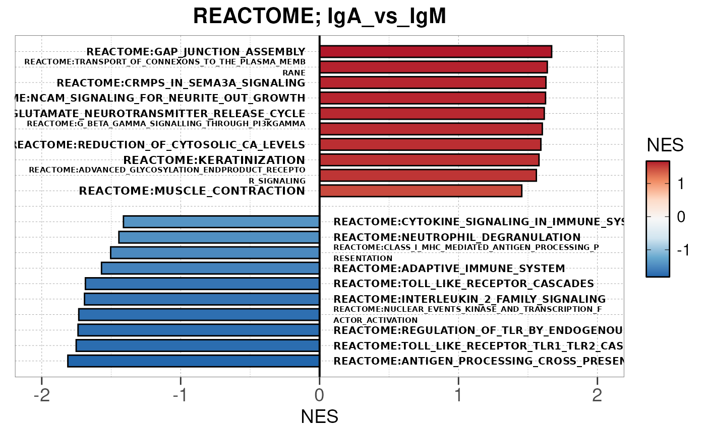
## | |====================================================== | 78%## Warning in geom_col(aes(stroke = label), width = 0.75, col = "black"):
## Ignoring unknown aesthetics: stroke## Warning: Removed 2 rows containing missing values or values outside the scale range
## (`geom_text()`).
## Removed 2 rows containing missing values or values outside the scale range
## (`geom_text()`).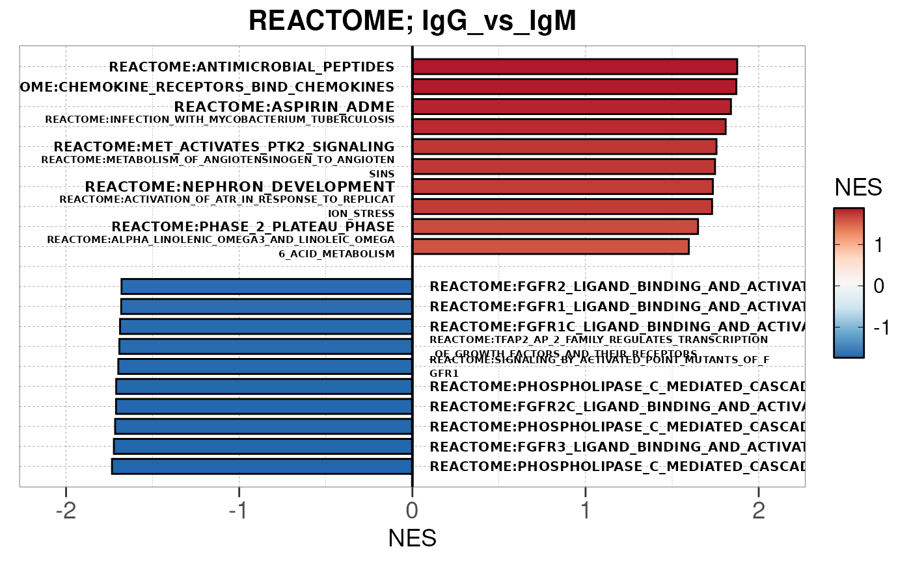
## | |========================================================== | 83%## Warning in geom_col(aes(stroke = label), width = 0.75, col = "black"):
## Ignoring unknown aesthetics: stroke## | |============================================================== | 89%## Warning in geom_col(aes(stroke = label), width = 0.75, col = "black"):
## Ignoring unknown aesthetics: stroke## Warning: Removed 1 row containing missing values or values outside the scale range
## (`geom_text()`).
## Removed 1 row containing missing values or values outside the scale range
## (`geom_text()`).## | |================================================================== | 94%## Warning in geom_col(aes(stroke = label), width = 0.75, col = "black"): Ignoring unknown aesthetics: stroke
## Removed 1 row containing missing values or values outside the scale range
## (`geom_text()`).
## Removed 1 row containing missing values or values outside the scale range
## (`geom_text()`).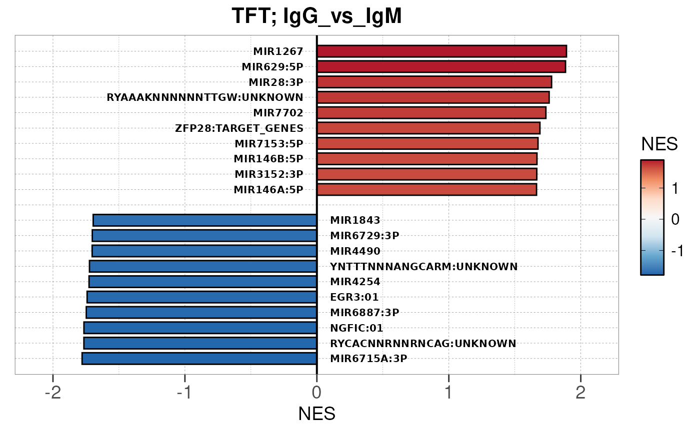
## | |======================================================================| 100%## Formatting for enrichmentmap...## Complete; returning DESeq2 object...## class: DESeqDataSet
## dim: 53571 11
## metadata(1): version
## assays(1): counts
## rownames(53571): 0610005C13Rik 0610006L08Rik ... snoZ159 snoZ196
## rowData names(0):
## colnames(11): BM_IgA_1 BM_IgA_2 ... BM_IgM_3 BM_IgM_4
## colData names(6): sample Group1 ... sizeFactor conditionRun deseq2pip on ATAC-seq data
# create a directory for results, currently set to tempdir()
# save_dir <- "/Users/hungm/Documents/development/deseq2pip/tests/atacseq/pipeline/"
save_dir <- tempdir()
dir.create(save_dir, recursive = TRUE)## Warning in dir.create(save_dir, recursive = TRUE): '/tmp/RtmpTUxHJn' already
## existsLoad DESeq2 object from nfcore pipeline
# load example DESeq2 object
rdata <- system.file("data", "GSE224512.dds.RData", package = "deseq2pip")
annotatePeaks <- gzfile(system.file("data", "GSE224512.annotatePeaks.txt.gz", package = "deseq2pip"))
dds <- import_nfcore_atac(rdata = rdata, annotatePeaks = annotatePeaks)
assay(dds)[1:5, 1:5]## CC_REP3 CB_REP1 CC_REP4 CC_REP1 CC_REP2
## Interval_1 13 9 12 14 18
## Interval_2 16 13 11 15 10
## Interval_3 16 9 14 9 15
## Interval_4 7 16 17 20 16
## Interval_5 3 4 4 6 6Run deseq2 pipeline
# run deseq2pip
run_deseq2_pip(
dds,
assaytype = "ATAC",
batch = NULL,
experiment = "GSE224512",
remove_xy = TRUE,
remove_mt = TRUE,
org = "mouse",
group_by = "Group1",
save_dir = save_dir)## Running quality control pipeline...## Removing XY genes...## Removing MT genes...## Filtering genes with low expressions...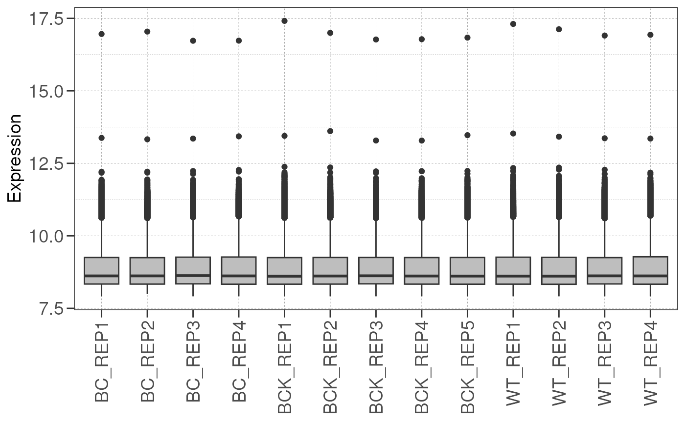
## Saving DESeq2 object & expressions...## Running distance analysis pipeline...## Running batch correction...## Running PCA and distance analysis...## using ntop=500 top features by variance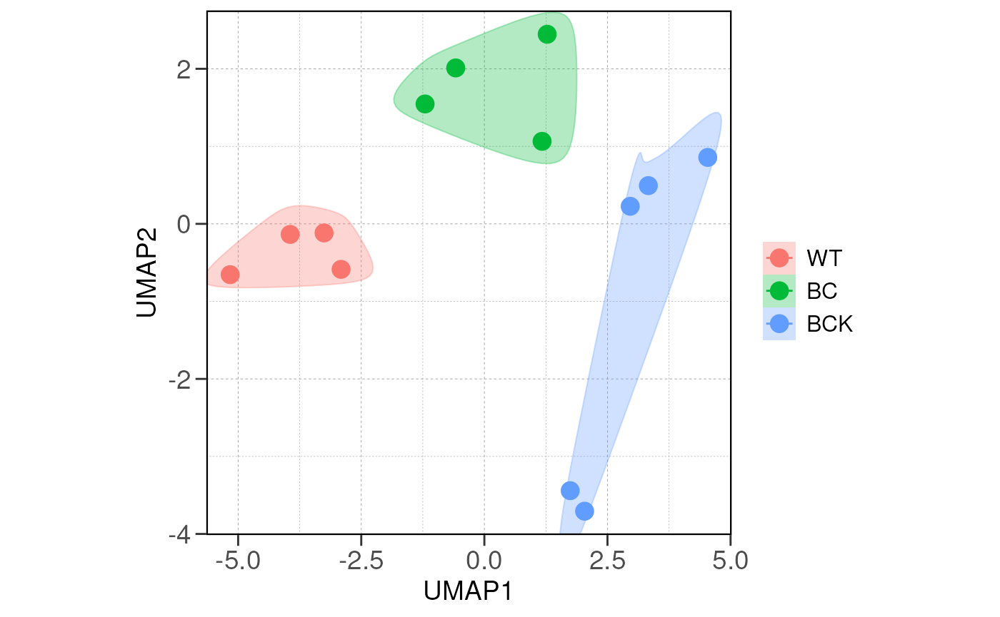
## using ntop=500 top features by variance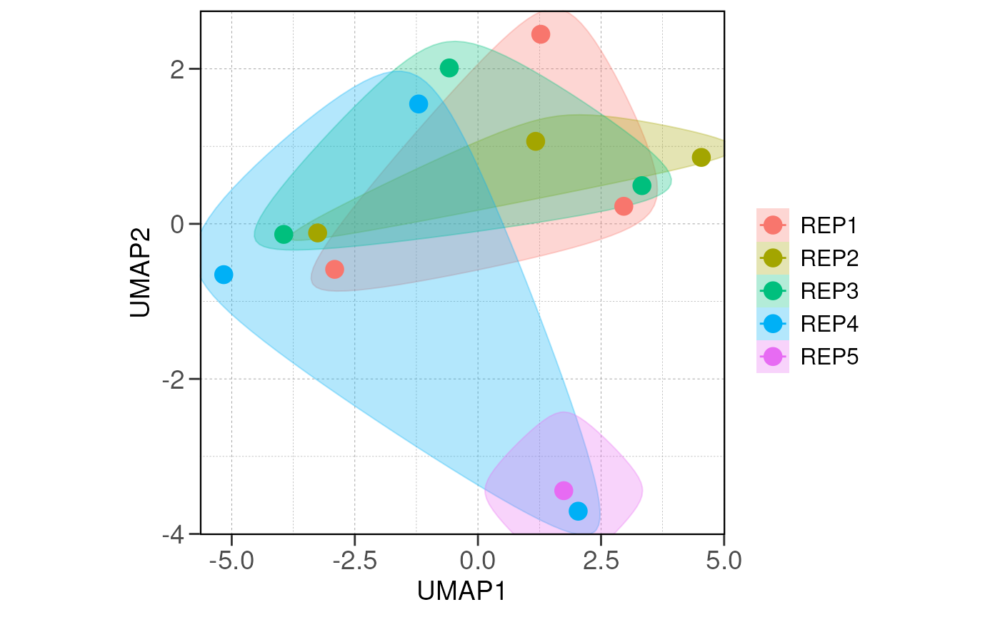
## using ntop=500 top features by variance 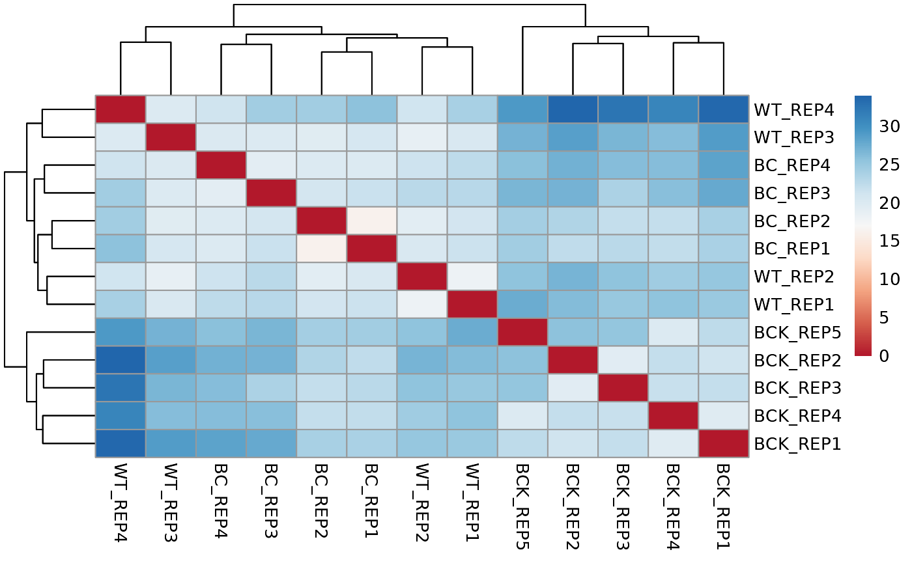
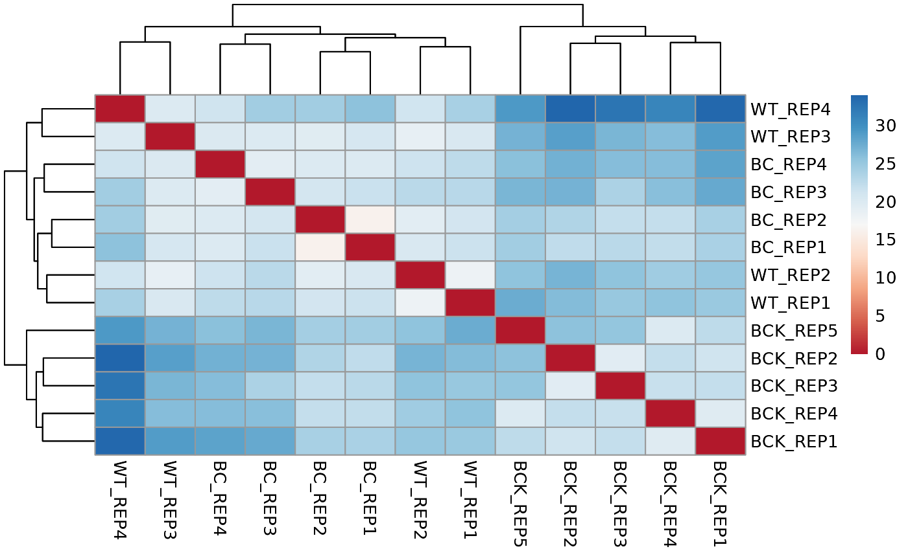
## Running differential expression analysis...## Running DESeq2 differential expression...## | | | 0%## using pre-existing size factors## estimating dispersions## gene-wise dispersion estimates## mean-dispersion relationship## final dispersion estimates## fitting model and testing## using 'ashr' for LFC shrinkage. If used in published research, please cite:
## Stephens, M. (2016) False discovery rates: a new deal. Biostatistics, 18:2.
## https://doi.org/10.1093/biostatistics/kxw041## Combining row metadata to results...## Warning: The OmnipathR package is needed for annotation functions. Please
## install it with: BiocManager::install('OmnipathR')## | |======================= | 33%## using pre-existing size factors## estimating dispersions## gene-wise dispersion estimates## mean-dispersion relationship## final dispersion estimates## fitting model and testing## using 'ashr' for LFC shrinkage. If used in published research, please cite:
## Stephens, M. (2016) False discovery rates: a new deal. Biostatistics, 18:2.
## https://doi.org/10.1093/biostatistics/kxw041## Combining row metadata to results...## Warning: The OmnipathR package is needed for annotation functions. Please
## install it with: BiocManager::install('OmnipathR')## | |=============================================== | 67%## using pre-existing size factors## estimating dispersions## gene-wise dispersion estimates## mean-dispersion relationship## final dispersion estimates## fitting model and testing## using 'ashr' for LFC shrinkage. If used in published research, please cite:
## Stephens, M. (2016) False discovery rates: a new deal. Biostatistics, 18:2.
## https://doi.org/10.1093/biostatistics/kxw041## Combining row metadata to results...## Warning: The OmnipathR package is needed for annotation functions. Please
## install it with: BiocManager::install('OmnipathR')## | |======================================================================| 100%## Generating MA plots...## | | | 0%## Warning: ggrepel: 340 unlabeled data points (too many overlaps). Consider
## increasing max.overlaps## | |======================= | 33%## Warning: ggrepel: 3651 unlabeled data points (too many overlaps). Consider
## increasing max.overlaps## | |=============================================== | 67%## Warning: ggrepel: 6951 unlabeled data points (too many overlaps). Consider
## increasing max.overlaps## | |======================================================================| 100%## Generating volcano plots...## | | | 0%## Warning: Removed 2824 rows containing missing values or values outside the scale range
## (`geom_point()`).## Warning: Removed 72613 rows containing missing values or values outside the scale range
## (`geom_text()`).## Warning: ggrepel: 26 unlabeled data points (too many overlaps). Consider
## increasing max.overlaps## Warning: Removed 2824 rows containing missing values or values outside the scale range
## (`geom_point()`).## Warning: Removed 72613 rows containing missing values or values outside the scale range
## (`geom_text()`).## Warning: ggrepel: 25 unlabeled data points (too many overlaps). Consider
## increasing max.overlaps## | |======================= | 33%## Warning: Removed 23960 rows containing missing values or values outside the scale range
## (`geom_point()`).## Warning: Removed 72498 rows containing missing values or values outside the scale range
## (`geom_text()`).## Warning: ggrepel: 32 unlabeled data points (too many overlaps). Consider
## increasing max.overlaps## Warning: Removed 23960 rows containing missing values or values outside the scale range
## (`geom_point()`).## Warning: Removed 72498 rows containing missing values or values outside the scale range
## (`geom_text()`).## Warning: ggrepel: 18 unlabeled data points (too many overlaps). Consider
## increasing max.overlaps## | |=============================================== | 67%## Warning: Removed 9870 rows containing missing values or values outside the scale range
## (`geom_point()`).## Warning: Removed 72626 rows containing missing values or values outside the scale range
## (`geom_text()`).## Warning: ggrepel: 32 unlabeled data points (too many overlaps). Consider
## increasing max.overlaps## Warning: Removed 9870 rows containing missing values or values outside the scale range
## (`geom_point()`).## Warning: Removed 72626 rows containing missing values or values outside the scale range
## (`geom_text()`).## Warning: ggrepel: 30 unlabeled data points (too many overlaps). Consider
## increasing max.overlaps## | |======================================================================| 100%## Repeating analysis for TSS peaks...## Running batch correction...## Running PCA and distance analysis...## using ntop=500 top features by variance
## using ntop=500 top features by variance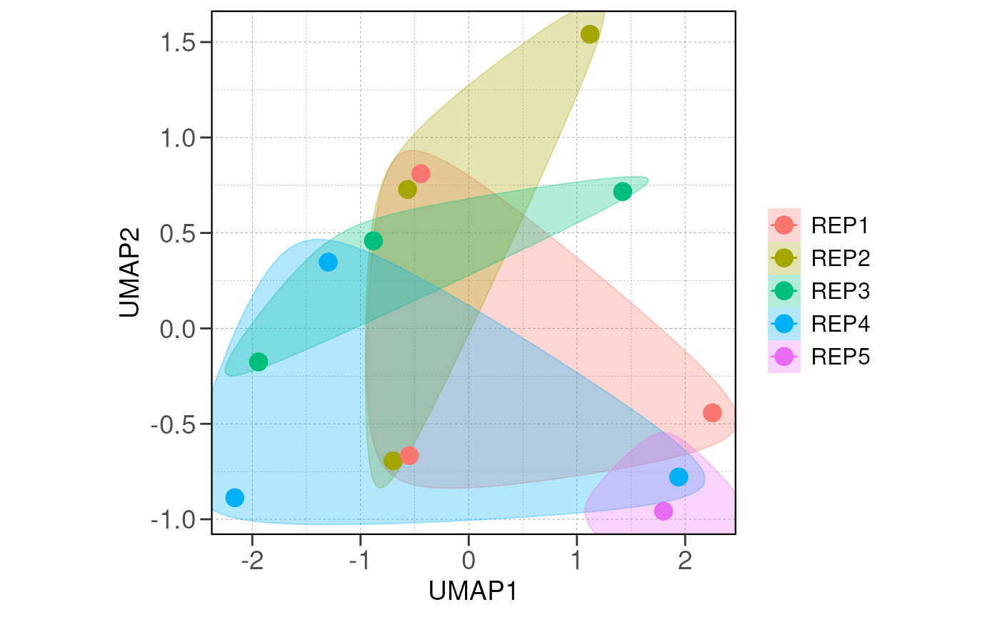
## using ntop=500 top features by variance
## using ntop=500 top features by variance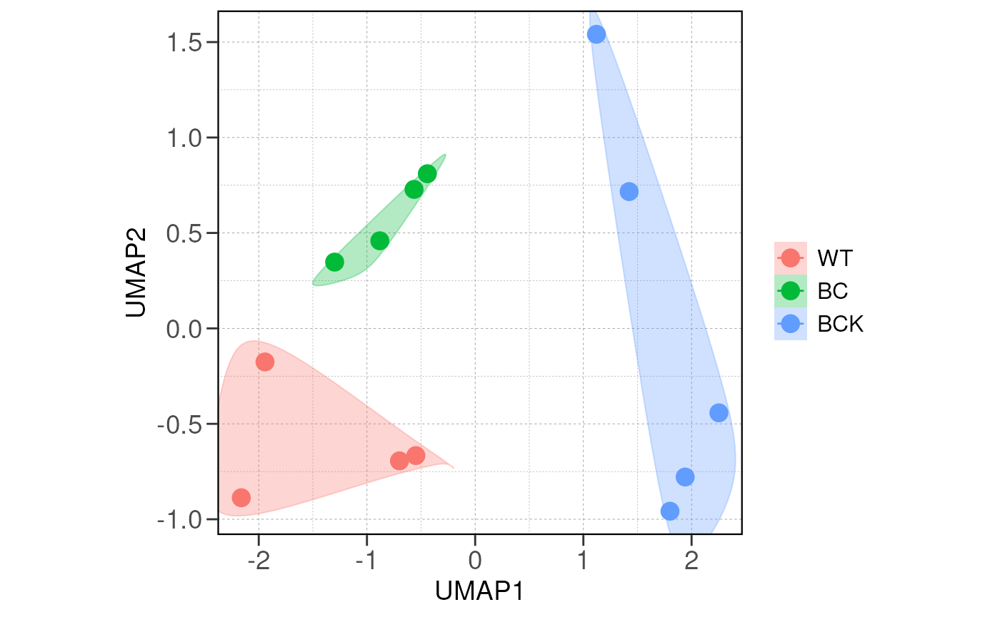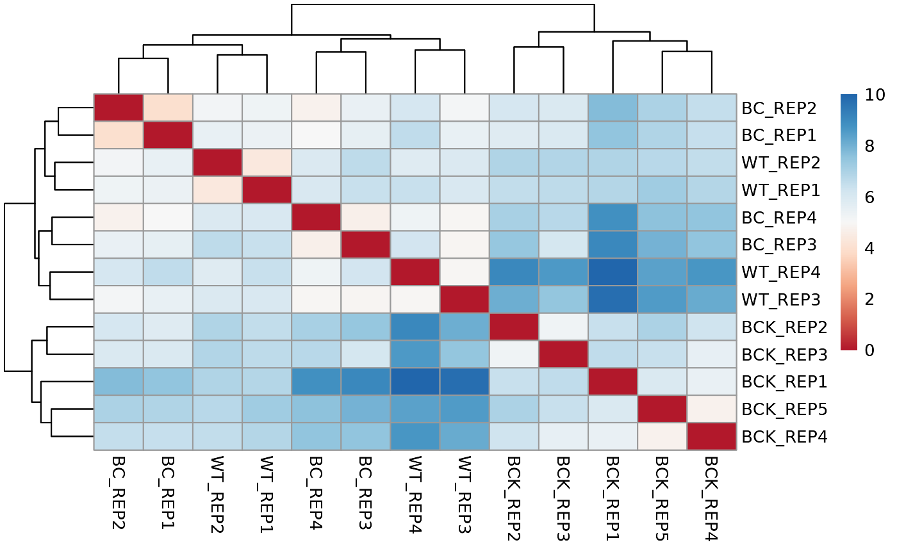
## Running DESeq2 differential expression...## | | | 0%## using pre-existing size factors## estimating dispersions## gene-wise dispersion estimates## mean-dispersion relationship## final dispersion estimates## fitting model and testing## using 'ashr' for LFC shrinkage. If used in published research, please cite:
## Stephens, M. (2016) False discovery rates: a new deal. Biostatistics, 18:2.
## https://doi.org/10.1093/biostatistics/kxw041## Combining row metadata to results...## Warning: The OmnipathR package is needed for annotation functions. Please
## install it with: BiocManager::install('OmnipathR')## | |======================= | 33%## using pre-existing size factors## estimating dispersions## gene-wise dispersion estimates## mean-dispersion relationship## final dispersion estimates## fitting model and testing## using 'ashr' for LFC shrinkage. If used in published research, please cite:
## Stephens, M. (2016) False discovery rates: a new deal. Biostatistics, 18:2.
## https://doi.org/10.1093/biostatistics/kxw041## Combining row metadata to results...## Warning: The OmnipathR package is needed for annotation functions. Please
## install it with: BiocManager::install('OmnipathR')## | |=============================================== | 67%## using pre-existing size factors## estimating dispersions## gene-wise dispersion estimates## mean-dispersion relationship## final dispersion estimates## fitting model and testing## using 'ashr' for LFC shrinkage. If used in published research, please cite:
## Stephens, M. (2016) False discovery rates: a new deal. Biostatistics, 18:2.
## https://doi.org/10.1093/biostatistics/kxw041## Combining row metadata to results...## Warning: The OmnipathR package is needed for annotation functions. Please
## install it with: BiocManager::install('OmnipathR')## | |======================================================================| 100%## Generating MA plots...## | | | 0%## Warning: ggrepel: 14 unlabeled data points (too many overlaps). Consider
## increasing max.overlaps## | |======================= | 33%## Warning: ggrepel: 1600 unlabeled data points (too many overlaps). Consider
## increasing max.overlaps## | |=============================================== | 67%## Warning: ggrepel: 1875 unlabeled data points (too many overlaps). Consider
## increasing max.overlaps## | |======================================================================| 100%## Generating volcano plots...## | | | 0%## Warning: Removed 248 rows containing missing values or values outside the scale range
## (`geom_point()`).## Warning: Removed 12717 rows containing missing values or values outside the scale range
## (`geom_text()`).## Warning: Removed 248 rows containing missing values or values outside the scale range
## (`geom_point()`).## Warning: Removed 12717 rows containing missing values or values outside the scale range
## (`geom_text()`).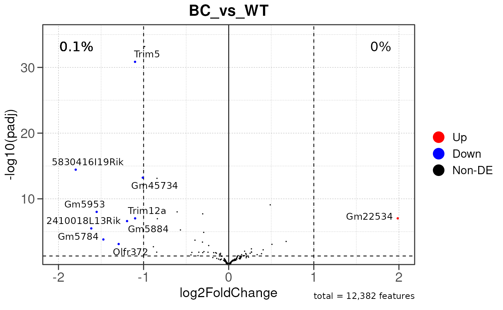
## | |======================= | 33%## Warning: Removed 1234 rows containing missing values or values outside the scale range
## (`geom_point()`).## Warning: Removed 12677 rows containing missing values or values outside the scale range
## (`geom_text()`).## Warning: ggrepel: 7 unlabeled data points (too many overlaps). Consider
## increasing max.overlaps## Warning: Removed 1234 rows containing missing values or values outside the scale range
## (`geom_point()`).## Warning: Removed 12677 rows containing missing values or values outside the scale range
## (`geom_text()`).## Warning: ggrepel: 6 unlabeled data points (too many overlaps). Consider
## increasing max.overlaps## | |=============================================== | 67%## Warning: Removed 247 rows containing missing values or values outside the scale range
## (`geom_point()`).## Warning: Removed 12717 rows containing missing values or values outside the scale range
## (`geom_text()`).## Warning: Removed 247 rows containing missing values or values outside the scale range
## (`geom_point()`).## Warning: Removed 12717 rows containing missing values or values outside the scale range
## (`geom_text()`).
## | |======================================================================| 100%## Running gene set enrichment analysis...## | | | 0%## using 'fgsea' for GSEA analysis, please cite Korotkevich et al (2019).## preparing geneSet collections...## GSEA analysis...## leading edge analysis...## done...## using 'fgsea' for GSEA analysis, please cite Korotkevich et al (2019).## preparing geneSet collections...## GSEA analysis...## leading edge analysis...## done...## using 'fgsea' for GSEA analysis, please cite Korotkevich et al (2019).## preparing geneSet collections...## GSEA analysis...## leading edge analysis...## done...## using 'fgsea' for GSEA analysis, please cite Korotkevich et al (2019).## preparing geneSet collections...## GSEA analysis...## leading edge analysis...## done...## using 'fgsea' for GSEA analysis, please cite Korotkevich et al (2019).## preparing geneSet collections...## GSEA analysis...## leading edge analysis...## done...## using 'fgsea' for GSEA analysis, please cite Korotkevich et al (2019).## preparing geneSet collections...## GSEA analysis...## leading edge analysis...## done...## | |======================= | 33%## using 'fgsea' for GSEA analysis, please cite Korotkevich et al (2019).## preparing geneSet collections...## GSEA analysis...## leading edge analysis...## done...## using 'fgsea' for GSEA analysis, please cite Korotkevich et al (2019).## preparing geneSet collections...## GSEA analysis...## Warning in fgseaMultilevel(pathways = pathways, stats = stats, minSize =
## minSize, : There were 3 pathways for which P-values were not calculated
## properly due to unbalanced (positive and negative) gene-level statistic values.
## For such pathways pval, padj, NES, log2err are set to NA. You can try to
## increase the value of the argument nPermSimple (for example set it nPermSimple
## = 10000)## Warning in fgseaMultilevel(pathways = pathways, stats = stats, minSize =
## minSize, : For some of the pathways the P-values were likely overestimated. For
## such pathways log2err is set to NA.## leading edge analysis...## done...## using 'fgsea' for GSEA analysis, please cite Korotkevich et al (2019).## preparing geneSet collections...## GSEA analysis...## leading edge analysis...## done...## using 'fgsea' for GSEA analysis, please cite Korotkevich et al (2019).## preparing geneSet collections...## GSEA analysis...## leading edge analysis...## done...## using 'fgsea' for GSEA analysis, please cite Korotkevich et al (2019).## preparing geneSet collections...## GSEA analysis...## leading edge analysis...## done...## using 'fgsea' for GSEA analysis, please cite Korotkevich et al (2019).## preparing geneSet collections...## GSEA analysis...## Warning in fgseaMultilevel(pathways = pathways, stats = stats, minSize =
## minSize, : For some of the pathways the P-values were likely overestimated. For
## such pathways log2err is set to NA.## Warning in fgseaMultilevel(pathways = pathways, stats = stats, minSize =
## minSize, : For some pathways, in reality P-values are less than 1e-10. You can
## set the `eps` argument to zero for better estimation.## leading edge analysis...## done...## | |=============================================== | 67%## using 'fgsea' for GSEA analysis, please cite Korotkevich et al (2019).## preparing geneSet collections...## GSEA analysis...## leading edge analysis...## done...## using 'fgsea' for GSEA analysis, please cite Korotkevich et al (2019).## preparing geneSet collections...## GSEA analysis...## Warning in fgseaMultilevel(pathways = pathways, stats = stats, minSize =
## minSize, : There were 5 pathways for which P-values were not calculated
## properly due to unbalanced (positive and negative) gene-level statistic values.
## For such pathways pval, padj, NES, log2err are set to NA. You can try to
## increase the value of the argument nPermSimple (for example set it nPermSimple
## = 10000)
## Warning in fgseaMultilevel(pathways = pathways, stats = stats, minSize =
## minSize, : For some pathways, in reality P-values are less than 1e-10. You can
## set the `eps` argument to zero for better estimation.## leading edge analysis...## done...## using 'fgsea' for GSEA analysis, please cite Korotkevich et al (2019).## preparing geneSet collections...## GSEA analysis...## leading edge analysis...## done...## using 'fgsea' for GSEA analysis, please cite Korotkevich et al (2019).## preparing geneSet collections...## GSEA analysis...## leading edge analysis...## done...## using 'fgsea' for GSEA analysis, please cite Korotkevich et al (2019).## preparing geneSet collections...## GSEA analysis...## Warning in fgseaMultilevel(pathways = pathways, stats = stats, minSize =
## minSize, : There were 2 pathways for which P-values were not calculated
## properly due to unbalanced (positive and negative) gene-level statistic values.
## For such pathways pval, padj, NES, log2err are set to NA. You can try to
## increase the value of the argument nPermSimple (for example set it nPermSimple
## = 10000)## leading edge analysis...## done...## using 'fgsea' for GSEA analysis, please cite Korotkevich et al (2019).## preparing geneSet collections...## GSEA analysis...## Warning in fgseaMultilevel(pathways = pathways, stats = stats, minSize =
## minSize, : There were 2 pathways for which P-values were not calculated
## properly due to unbalanced (positive and negative) gene-level statistic values.
## For such pathways pval, padj, NES, log2err are set to NA. You can try to
## increase the value of the argument nPermSimple (for example set it nPermSimple
## = 10000)## Warning in fgseaMultilevel(pathways = pathways, stats = stats, minSize =
## minSize, : For some of the pathways the P-values were likely overestimated. For
## such pathways log2err is set to NA.## leading edge analysis...## done...## | |======================================================================| 100%## Generating GSEA barplots...## | | | 0%## Warning in geom_col(aes(stroke = label), width = 0.75, col = "black"):
## Ignoring unknown aesthetics: stroke## Warning: Removed 2 rows containing missing values or values outside the scale range
## (`geom_text()`).
## Removed 2 rows containing missing values or values outside the scale range
## (`geom_text()`).## | |==== | 6%## Warning in geom_col(aes(stroke = label), width = 0.75, col = "black"):
## Ignoring unknown aesthetics: stroke## Warning: Removed 1 row containing missing values or values outside the scale range
## (`geom_text()`).
## Removed 1 row containing missing values or values outside the scale range
## (`geom_text()`).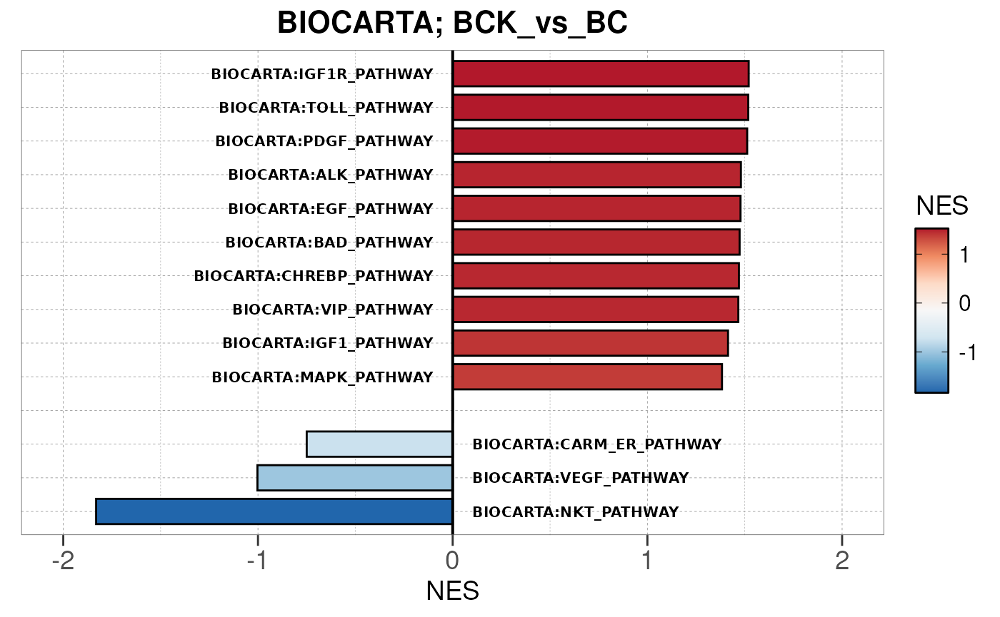
## | |======== | 11%## Warning in geom_col(aes(stroke = label), width = 0.75, col = "black"): Ignoring unknown aesthetics: stroke
## Removed 1 row containing missing values or values outside the scale range
## (`geom_text()`).
## Removed 1 row containing missing values or values outside the scale range
## (`geom_text()`).## | |============ | 17%## Warning in geom_col(aes(stroke = label), width = 0.75, col = "black"):
## Ignoring unknown aesthetics: stroke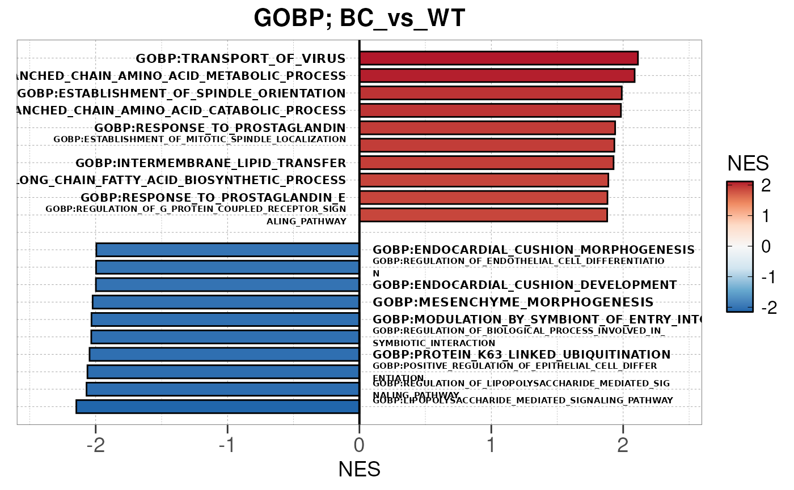
## | |================ | 22%## Warning in geom_col(aes(stroke = label), width = 0.75, col = "black"):
## Ignoring unknown aesthetics: stroke## | |=================== | 28%## Warning in geom_col(aes(stroke = label), width = 0.75, col = "black"): Ignoring unknown aesthetics: stroke
## Removed 1 row containing missing values or values outside the scale range
## (`geom_text()`).
## Removed 1 row containing missing values or values outside the scale range
## (`geom_text()`).## | |======================= | 33%## Warning in geom_col(aes(stroke = label), width = 0.75, col = "black"): Ignoring unknown aesthetics: stroke
## Removed 1 row containing missing values or values outside the scale range
## (`geom_text()`).
## Removed 1 row containing missing values or values outside the scale range
## (`geom_text()`).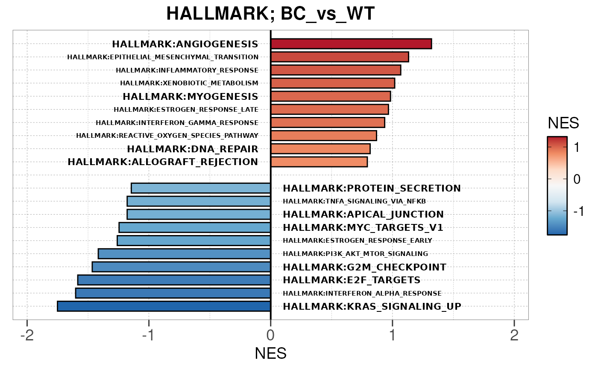
## | |=========================== | 39%## Warning in geom_col(aes(stroke = label), width = 0.75, col = "black"):
## Ignoring unknown aesthetics: stroke## Warning: Removed 3 rows containing missing values or values outside the scale range
## (`geom_text()`).
## Removed 3 rows containing missing values or values outside the scale range
## (`geom_text()`).## | |=============================== | 44%## Warning in geom_col(aes(stroke = label), width = 0.75, col = "black"): Ignoring unknown aesthetics: stroke
## Removed 3 rows containing missing values or values outside the scale range
## (`geom_text()`).
## Removed 3 rows containing missing values or values outside the scale range
## (`geom_text()`).## | |=================================== | 50%## Warning in geom_col(aes(stroke = label), width = 0.75, col = "black"):
## Ignoring unknown aesthetics: stroke## | |======================================= | 56%## Warning in geom_col(aes(stroke = label), width = 0.75, col = "black"):
## Ignoring unknown aesthetics: stroke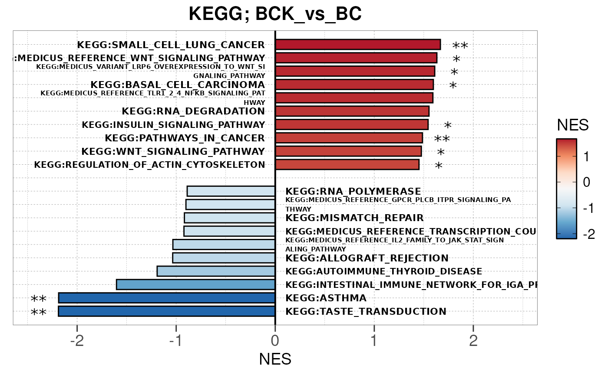
## | |=========================================== | 61%## Warning in geom_col(aes(stroke = label), width = 0.75, col = "black"):
## Ignoring unknown aesthetics: stroke## Warning: Removed 1 row containing missing values or values outside the scale range
## (`geom_text()`).
## Removed 1 row containing missing values or values outside the scale range
## (`geom_text()`).## | |=============================================== | 67%## Warning in geom_col(aes(stroke = label), width = 0.75, col = "black"):
## Ignoring unknown aesthetics: stroke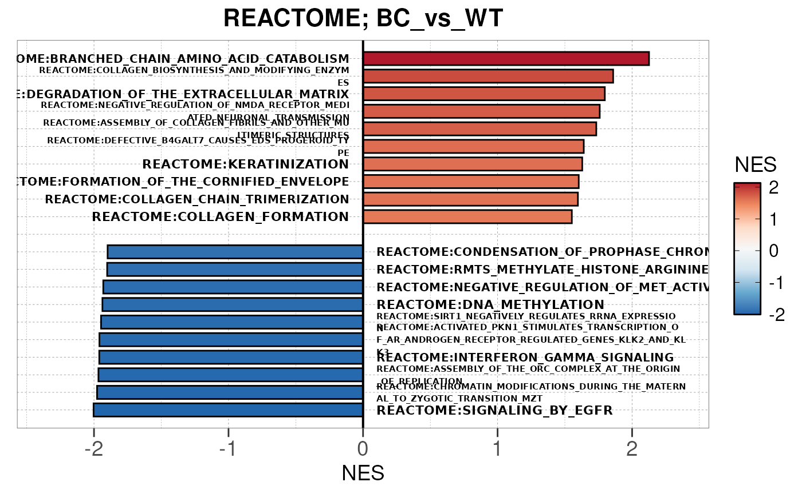
## | |=================================================== | 72%## Warning in geom_col(aes(stroke = label), width = 0.75, col = "black"): Ignoring unknown aesthetics: stroke
## Removed 1 row containing missing values or values outside the scale range
## (`geom_text()`).
## Removed 1 row containing missing values or values outside the scale range
## (`geom_text()`).## | |====================================================== | 78%## Warning in geom_col(aes(stroke = label), width = 0.75, col = "black"):
## Ignoring unknown aesthetics: stroke## | |========================================================== | 83%## Warning in geom_col(aes(stroke = label), width = 0.75, col = "black"):
## Ignoring unknown aesthetics: stroke## | |============================================================== | 89%## Warning in geom_col(aes(stroke = label), width = 0.75, col = "black"):
## Ignoring unknown aesthetics: stroke## Warning: Removed 7 rows containing missing values or values outside the scale range
## (`geom_text()`).
## Removed 7 rows containing missing values or values outside the scale range
## (`geom_text()`).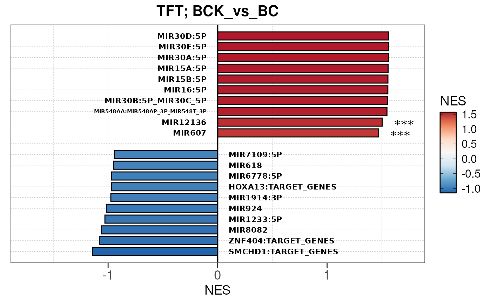
## | |================================================================== | 94%## Warning in geom_col(aes(stroke = label), width = 0.75, col = "black"):
## Ignoring unknown aesthetics: stroke## Warning: Removed 1 row containing missing values or values outside the scale range
## (`geom_text()`).
## Removed 1 row containing missing values or values outside the scale range
## (`geom_text()`).## | |======================================================================| 100%## Formatting for enrichmentmap...## TSS peak analysis complete; returning DESeq2 object...## class: DESeqDataSet
## dim: 72693 13
## metadata(1): version
## assays(2): counts vst
## rownames(72693): Interval_1 Interval_2 ... Interval_74850
## Interval_74851
## rowData names(19): Chr Start ... gene TSS
## colnames(13): WT_REP4 BCK_REP5 ... BC_REP2 BC_REP1
## colData names(4): sample Group1 Group2 sizeFactor